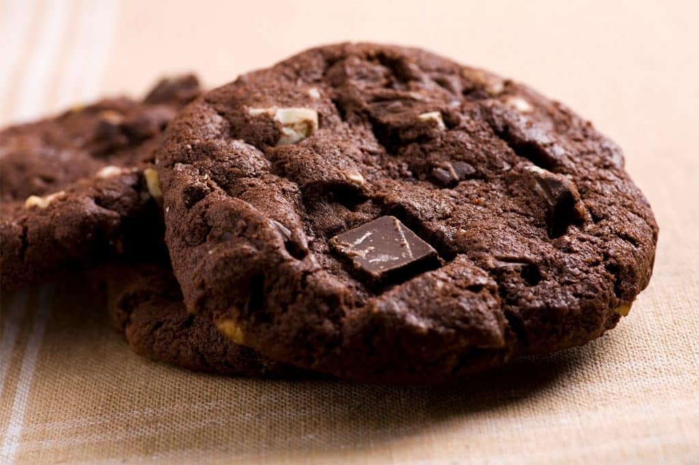

แจกสูตร ‘คุกกี้ช็อคโกแลต’

เมนูสุดฮิตอย่าง 'คุกกี้' ที่ไม่ว่าจะผ่านไปกี่ปีก็ไม่มีเบื่อ
นอนกินนั่งกินเพลิดเพลินกับขนมชิ้นนี้ได้ทั้งและสามารถทำกินเองที่บ้านได้อีกด้วย
ส่วนผสมคุกกี้ช็อคโกแลต :
- แป้งอเนกประสงค์ 450 กรัม
- เบคกิ้งโซดา (โซดาไบคาร์บอเนต) 1 ช้อนชา
- เนยสดชนิดเค็ม 300 กรัม
- น้ำตาลทรายขาว 250 กรัม
- ผงฟู 2 ช้อนชา
- โกโก้ 30 กรัม
- เกลือ ½ ช้อนชา
- ไข่ไก่ 1 ฟอง
วิธีทำคุกกี้ช็อคโกแลต :
-
แป้งอเนกประสงค์ ผงฟู เบคกิ้งโซดาร่อนรวมเข้าด้วยกันไว้ ตีเนยสดให้อ่อนตัว
เติมน้ำตาลทรายและเกลือลงไปจนหมด
-
ตีด้วยความเร็วสูงจนส่วนผสมที่ได้มีปริมาณเพิ่มขึ้นเป็นสองเท่า
เติมไข่ไก่และแป้งที่ร่อนไว้ลงไป ปรับเป็นความเร็วต่ำตีพอเข้ากัน
-
เตรียมถาดสำหรับอบคุกกี้ โดยทาเนยขาวบางๆ ตักคุกกี้เป็นก้อนกลมๆ
ให้มีขนาดเท่ากัน วางคุกกี้บนถาดให้ห่างกันประมาณ 1 นิ้ว
กดหน้าคุกกี้เล็กน้อย
-
อบที่อุณหภูมิ 160 -170 องศาเซลเซียส นานประมาณ 15 – 20 นาที
หรือจนกว่าจะสุก เมื่อขนมสุกแซะวางพักบนตะแกรงจนเย็น
คุณค่าทางโภชนาของคุกกี้ :
| คุณค่าทางโภชนาการต่อหนึ่งหน่วยบริโภค |
| พลังงานทั้งหมด 449 |
พลังงานจากไขมัน 162 |
| % ร้อยละของปริมาณที่แนะนำต่อวัน* |
| ไขมันทั้งหมด |
18 g |
28% |
| โซเดียม |
273 mg |
12% |
| โพแทสเซียม |
175 mg |
5% |
| คาร์โบไฮเดรต |
69.9g |
24% |
| โปรตีน |
4.8g |
10% |